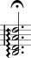
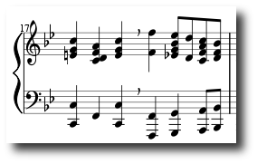

| 9 Sep | |
|
Die MuseScore Webseiten gibt es jetzt auch in deutsch.
|
| 18 aug | |
|
Some progress has been made for
drum notation. Code can be found
in the Subversion head branch.
|
| 30 jul |
MuseScore 0.6.1 |
|
MuseScore 0.6.1 is a bug fix release. It fixes the midi
import crash and adds some other small enhancements.
|
| 24 jul |
MuseScore 0.6.0 |
Today i uploaded the new MuseScore 0.6.0 release to SourceForge.
This release features a mix of bugfixes and new features.
New features are better MIDI import with automatic key detection and
pitch spelling, and a new import data format:
MuseData.
There are also some new symbols like arpeggio lines, breath markers,
and text frames. Usability is enhanced with a new dock widget
collecting all palettes. The symbol palette is now configurable with
custom symbols imported from various graphics formats.
Arpeggio
Line: |
 |
|
Breath marker in
piano system: |
 |
|